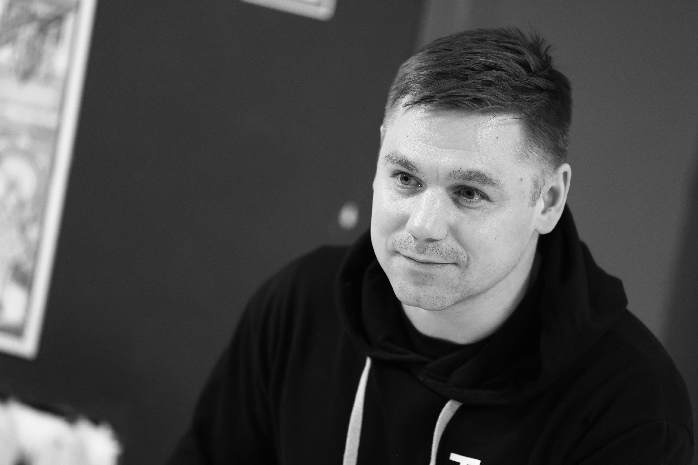
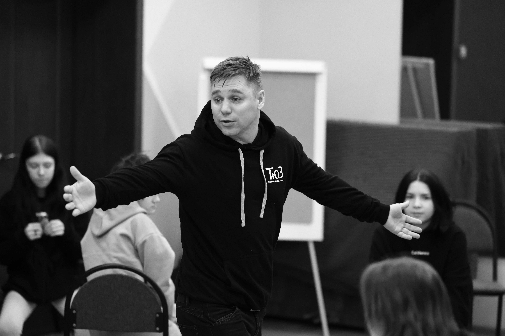
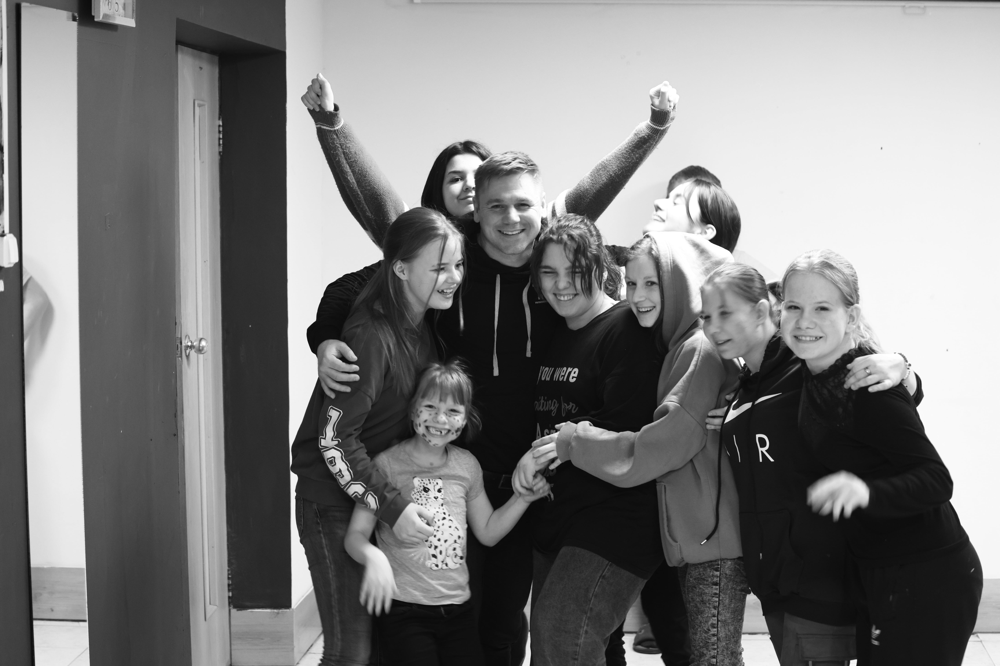
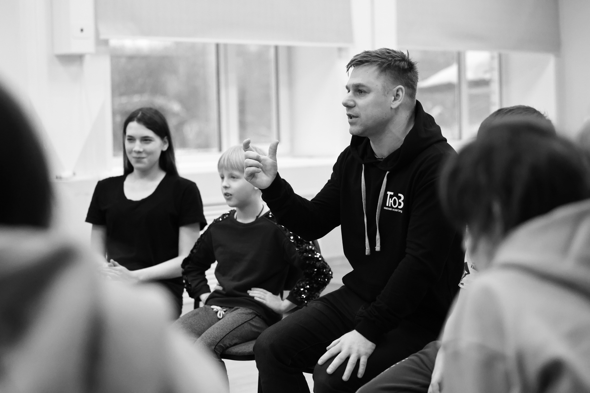
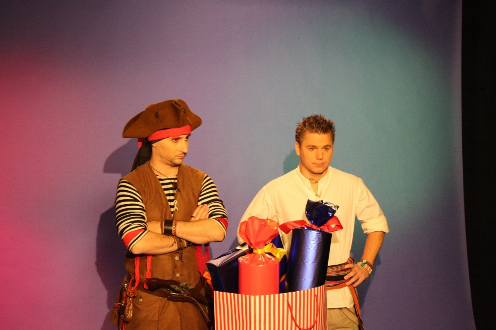
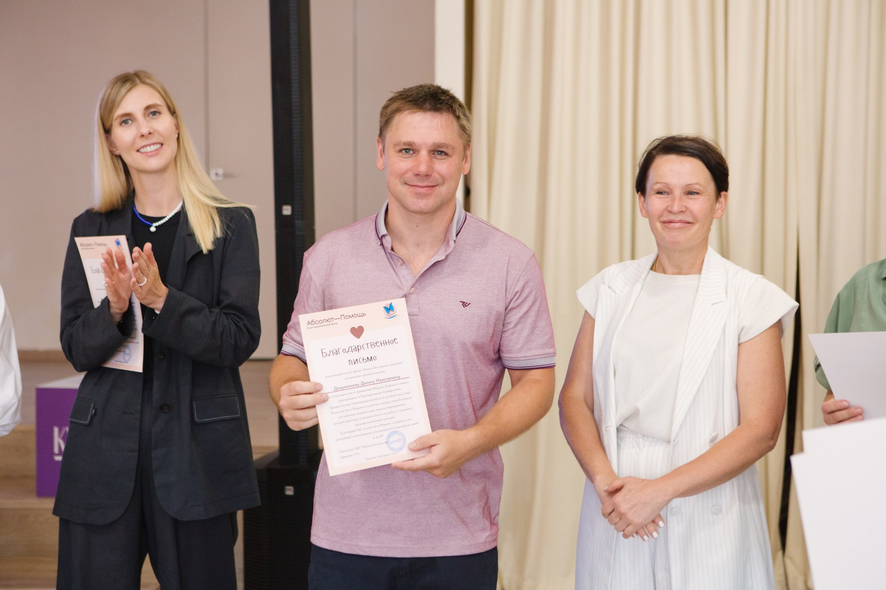
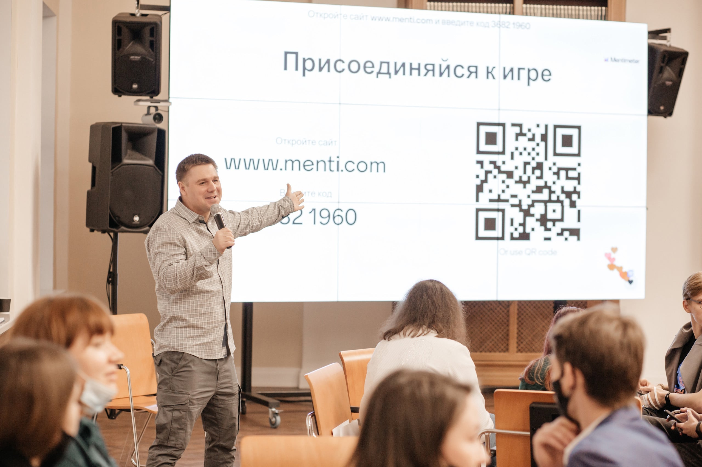
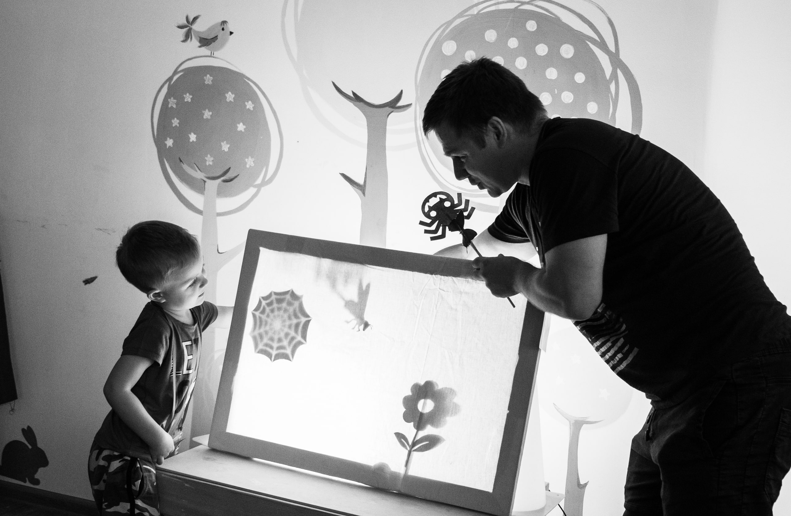
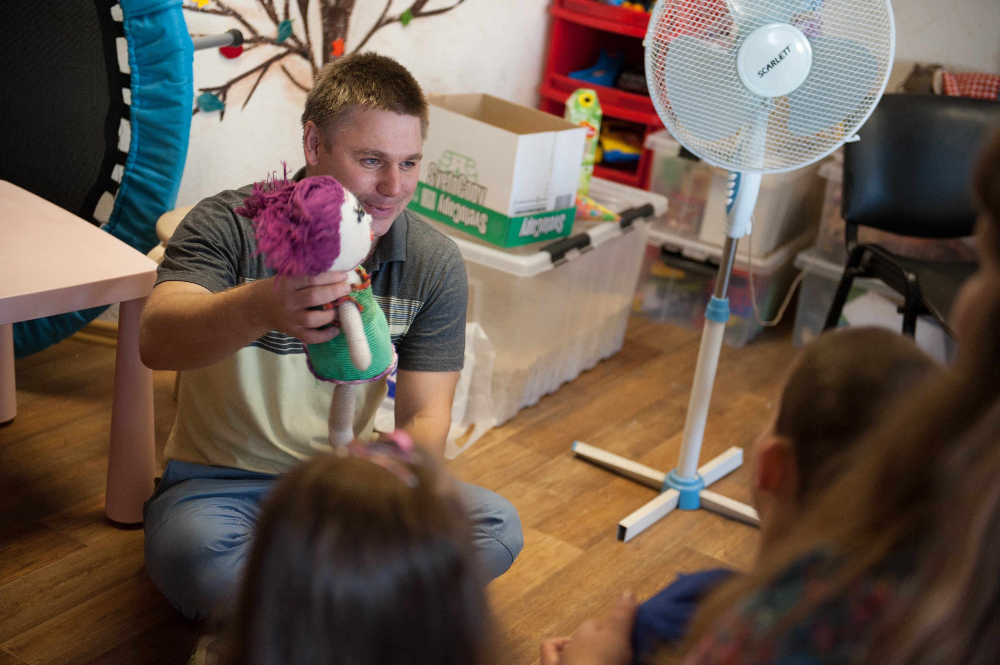
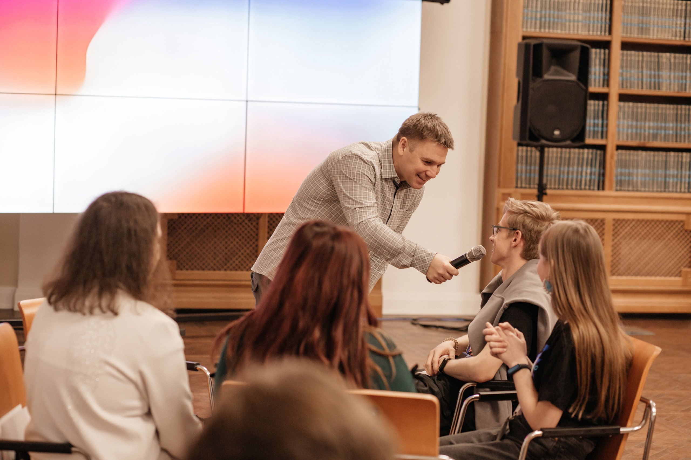

Режиссёр детской театральной студии "Мир искусства" (10 лет)
Телеканал "Карусель": Ведущий детской передачи "Подводный счёт" (3 года)
Первый канал: Ведущий утренней зарядки (1 год)
Нижегородский Театр Юного Зрителя: педагог-организатор (по н.в.)